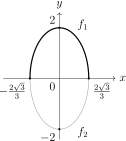

Hoofdstuk 4Irrationale functies
Leerplandoelstellingen (GO! Navigator)
Basisvorming (BV3_06)
-
• BV3_06.20 (MD 06.20) De leerlingen lossen vraagstukken en problemen op door te mathematiseren en demathematiseren en door gebruik te maken van heuristieken.
-
• BV3_06.21 (MD 06.21) De leerlingen gebruiken ICT om berekeningen uit te voeren en grafische voorstellingen te maken.
Gevorderde wiskunde (WD3_06.08)
-
• WD3_06.08.18 (MD 06.08.13) De leerlingen lossen eenvoudige veeltermvergelijkingen, rationale vergelijkingen, irrationale vergelijkingen, exponentiële vergelijkingen, logaritmische vergelijkingen en goniometrische vergelijkingen algebraı̈sch op.
-
– afbakening: deling van veeltermen
-
– afbakening: deling door \((x-a)\)
-
-
• WD3_06.08.21 (MD 06.08.07) De leerlingen leggen het verband tussen de grafiek en het voorschrift van een functie en haar kenmerken.
-
– afbakening: veeltermfuncties, rationale functies, (elementaire) irrationale functies, exponentiële functies, logaritmische functies \(f(x)=\log _a(x)\), goniometrische functies \(f(x)=\cos x\) en \(f(x)=\tan x\), cyclometrische functies, absolute waardenfunctie, meervoudig functievoorschrift
-
– afbakening: domein, bereik, nulwaarden, tekenverloop, stijgen/dalen/constant, extrema, constante/toenemende/afnemende stijging/daling, symmetrie, periode, amplitude, asymptotisch gedrag, gedrag op oneindig
-
I Irrationale vergelijkingen
1 Definitie
Een irrationale vergelijking in \(\mathbb {R}\) is een vergelijking in \(\mathbb {R}\) waarbij de onbekende onder het wortelteken voorkomt.
2 Oplossingsmethode
Om een irrationale vergelijking op te lossen zetten we de vergelijking om naar een nieuwe vergelijking zonder worteltermen. Dit doen we typisch door te kwadrateren.
\[ A(x)=B(x)\ \Longleftrightarrow \ \bigl (A(x)\bigr )^2=\bigl (B(x)\bigr )^2, \]
maar daarbij moeten we altijd de kwadrateringsvoorwaarde (KV) opstellen: beide leden moeten hetzelfde teken hebben.
-
1. B.V. (bestaansvoorwaarde): eis dat alle uitdrukkingen onder een wortel \(\ge 0\) zijn.
-
2. Vergelijking in standaardvorm brengen: zet alle worteltermen aan één kant (isoleer een wortelterm).
-
3. K.V. (kwadrateringsvoorwaarde): zorg dat linker lid en rechter lid hetzelfde teken hebben (meestal beide \(\ge 0\)).
-
4. Oplossen: kwadrateer (en herhaal indien nodig) tot er geen wortels meer zijn.
-
5. Controleren: controleer B.V. en K.V. (en eventueel in de oorspronkelijke vergelijking) en noteer \(V\).
3 Voorbeeld 1
Los op in \(\mathbb {R}\):
\[ \sqrt {x-1}-2=0. \]
\[ \text {B.V.: } x-1\ge 0 \Longleftrightarrow x\ge 1. \]
\(\seteqnumber{0}{}{0}\)\begin{align*} \sqrt {x-1}-2&=0\\ \sqrt {x-1}&=2\\ x-1&=4\\ x&=5 \end{align*} Dus \(V=\{5\}\).
4 Voorbeeld 2
Los op in \(\mathbb {R}\):
\[ \sqrt {x-1}=7-x. \]
\[ \text {B.V.: } x-1\ge 0 \Longleftrightarrow x\ge 1 \qquad \text {en}\qquad \text {K.V.: } 7-x\ge 0 \Longleftrightarrow x\le 7, \]
dus \(x\in [1,7]\).
\(\seteqnumber{0}{}{0}\)\begin{align*} \sqrt {x-1}&=7-x\\ x-1&=(7-x)^2\\ x-1&=49-14x+x^2\\ 0&=x^2-15x+50 \end{align*}
\[ D=(-15)^2-4\cdot 1\cdot 50=225-200=25. \]
\[ x=\frac {15\pm 5}{2}\ \Rightarrow \ x=5\ \text { of }\ x=10. \]
Controle met \(x\in [1,7]\) geeft enkel \(x=5\). Dus \(V=\{5\}\).
5 Voorbeeld 3
Los op in \(\mathbb {R}\):
\[ \sqrt {x+4}-\sqrt {x-4}=\sqrt {x-1}. \]
\[ \text {B.V.: }\;x+4\ge 0,\;x-4\ge 0,\;x-1\ge 0 \;\Longrightarrow \; x\ge 4. \]
\(\seteqnumber{0}{}{0}\)\begin{align*} \sqrt {x+4}-\sqrt {x-4}&=\sqrt {x-1}\\ \sqrt {x+4}&=\sqrt {x-1}+\sqrt {x-4} \end{align*}
(K.V.: geen, beide leden \(\ge 0\).)
\(\seteqnumber{0}{}{0}\)\begin{align*} x+4&=(x-1)+(x-4)+2\sqrt {(x-1)(x-4)}\\ x+4&=2x-5+2\sqrt {x^2-5x+4}\\ -x+9&=2\sqrt {x^2-5x+4} \end{align*}
\[ \text {K.V.2: }-x+9\ge 0 \Longleftrightarrow x\le 9 \quad \Rightarrow \quad x\in [4,9]. \]
\(\seteqnumber{0}{}{0}\)\begin{align*} (-x+9)^2&=4(x^2-5x+4)\\ x^2-18x+81&=4x^2-20x+16\\ 0&=3x^2-2x-65 \end{align*}
\[ D=(-2)^2-4\cdot 3\cdot (-65)=4+780=784=28^2. \]
\[ x=\frac {2\pm 28}{6}\ \Rightarrow \ x=5\ \text { of }\ x=-\frac {13}{3}. \]
Controle met \(x\in [4,9]\) geeft enkel \(x=5\). Dus \(V=\{5\}\).
6 Oefeningen
p111 nr3
II Bespreken van irrationale functies
1 Voorbeeld 1: \(f(x)=\sqrt {4-x^2}\)
a. Domein
Eis onder het wortelteken niet-negatief:
\[ 4-x^2 \ge 0. \]
| \(x\) | \(-2\) | \(2\) | |||
| \(4-x^2\) | \(-\) | \(0\) | \(+\) | \(0\) | \(-\) |
 |
|||||
\[ \boxed {\ \dom (f)=[-2,2]\ }. \]
b. Symmetrie
\[ f(-x)=\sqrt {4-(-x)^2}=\sqrt {4-x^2}=f(x). \]
Dus \(f\) is even en de grafiek is symmetrisch t.o.v. de \(y\)-as.
c. Nulwaarden
\[ f(x)=0 \Longleftrightarrow \sqrt {4-x^2}=0 \Longleftrightarrow 4-x^2=0 \Longleftrightarrow x=\pm 2. \]
d. Snijpunten met de assen
-
• Met de \(x\)-as: \((-2,0)\) en \((2,0)\).
-
• Met de \(y\)-as: \(x=0 \Rightarrow f(0)=\sqrt {4}=2\), dus \((0,2)\).
e. Tekenverloop
Op het domein geldt \(f(x)=\sqrt {4-x^2}\ge 0\).
| \(x\) | \(-2\) | \(2\) | ||||
| \(4-x^2\) | \(-\) | \(0\) | \(+\) | \(0\) | \(-\) | |
| \(\sqrt {4-x^2}\) | \(\undefsign\) | \(0\) | + | \(0\) | \(\undefsign\) |
f. Grafiek (met GRM)
\[ y=\sqrt {4-x^2}\ \Longleftrightarrow \ y^2=4-x^2\ \Longleftrightarrow \ x^2+y^2=4,\quad y\ge 0. \]
De grafiek is dus de bovenste halve cirkel met straal \(2\) en middelpunt \((0,0)\).
g. Extrema (grafisch)
-
• Absoluut maximum: \(f(0)=2\), dus maximumwaarde \(2\) bij \(x=0\).
-
• Absoluut minimum: \(f(\pm 2)=0\), dus minimumwaarde \(0\) bij \(x=-2\) en \(x=2\).
h. Stijgen en dalen (grafisch)
\[ \begin {array}{c|cccccccc} x & & -2 & & 0 & & 2 \\ \hline f(x) & \undefsign & 0 & \nearrow & 2 & \searrow & 0 & \undefsign \end {array} \]
2 Expliciet versus impliciet voorschrift
Definitie
-
• Als het voorschrift in feite in de vorm \(y=f(x)\) staat, spreken we van een expliciet gedefinieerde functie. Voor elke \(x\in \dom (f)\) kunnen we \(y\) berekenen.
-
• Als een uitdrukking in \(x\) en \(y\) in de vorm \(F(x,y)=c\) (\(c\in \mathbb {R}\)) staat, spreken we van een impliciet gedefinieerd voorschrift.
-
• Expliciet: \(y = \sqrt {4-x^2}\)
-
• Impliciet: \(x^2+y^2=4\)
Merk op
-
• Een impliciet voorschrift stelt niet noodzakelijk een functie voor.
-
• We proberen een impliciet voorschrift expliciet te schrijven (zie verder).
\[ x^2+y^2=4 \Longleftrightarrow y^2=4-x^2 \Longleftrightarrow y=\sqrt {4-x^2}\ \ \text {of}\ \ y=-\sqrt {4-x^2}. \]
Dit impliciete voorschrift stelt dus geen (enkelvoudige) functie voor, maar kan wel beschreven worden door twee irrationale functies:
\[f_1(x)=\sqrt {4-x^2} \text { en } f_2(x)=-\sqrt {4-x^2}\]
3 Voorbeeld 2: Bespreek \(3x^2+y^2=4\)
Om dit impliciet voorschrift te bespreken, zetten we het eerst om naar een expliciet voorschrift (zie vorige paragraaf):
\[ 3x^2+y^2=4 \Longleftrightarrow y^2=4-3x^2 \Longleftrightarrow y=\sqrt {4-3x^2}\ \ \text {of}\ \ y=-\sqrt {4-3x^2}. \]
Dit impliciete voorschrift stelt dus geen (enkelvoudige) functie voor, maar kan wel beschreven worden door twee irrationale functies:
\[ f_1(x)=\sqrt {4-3x^2} \qquad \text {en}\qquad f_2(x)=-\sqrt {4-3x^2}. \]
Deze twee grafieken zijn elkaars spiegelbeeld t.o.v. de \(x\)-as.
Bespreking van \(f_1(x)=\sqrt {4-3x^2}\)
\[ 4-3x^2\ge 0 \Longleftrightarrow 3x^2\le 4 \Longleftrightarrow x^2\le \frac {4}{3} \Longleftrightarrow -\frac {2\sqrt {3}}{3}\le x\le \frac {2\sqrt {3}}{3}. \]
| \(x\) | \(-\frac {2\sqrt {3}}{3}\) | \(\frac {2\sqrt {3}}{3}\) | |||
| \(4-3x^2\) | \(-\) | \(0\) | \(+\) | \(0\) | \(-\) |
\[ \boxed {\ \dom (f_1)=\left [-\frac {2\sqrt {3}}{3},\frac {2\sqrt {3}}{3}\right ]\ }. \]
\[ f_1(-x)=\sqrt {4-3(-x)^2}=\sqrt {4-3x^2}=f_1(x), \]
dus \(f_1\) is even (symmetrisch t.o.v. de \(y\)-as).
\[ f_1(x)=0 \Longleftrightarrow \sqrt {4-3x^2}=0 \Longleftrightarrow 4-3x^2=0 \Longleftrightarrow x=\pm \frac {2\sqrt {3}}{3}. \]
Nulpunten: \(\left (-\frac {2\sqrt {3}}{3},0\right )\) en \(\left (\frac {2\sqrt {3}}{3},0\right )\).
-
• Met de \(x\)-as: \(\left (-\frac {2\sqrt {3}}{3},0\right )\) en \(\left (\frac {2\sqrt {3}}{3},0\right )\).
-
• Met de \(y\)-as: \(x=0 \Rightarrow f_1(0)=2\), dus \((0,2)\).
| \(x\) | \(-\frac {2\sqrt {3}}{3}\) | \(\frac {2\sqrt {3}}{3}\) | ||||
| \(4-3x^2\) | \(-\) | \(0\) | \(+\) | \(0\) | \(-\) | |
| \(f_1(x)\) | \(\undefsign\) | \(0\) | \(+\) | \(0\) | \(\undefsign\) |

\[ y=\sqrt {4-3x^2} \Longleftrightarrow y^2=4-3x^2 \Longleftrightarrow 3x^2+y^2=4,\quad y\ge 0. \]
Dit is de bovenste helft van de ellips \(3x^2+y^2=4\).
-
• Absoluut maximum: \(f_1(0)=2\) bij \(x=0\).
-
• Absoluut minimum: \(0\) bij \(x=\pm \frac {2\sqrt {3}}{3}\).
8. Stijgen en dalen (grafisch)
\[ \begin {array}{c|cccccccc} x & & -\frac {2\sqrt {3}}{3} & & 0 & & \frac {2\sqrt {3}}{3} \\ \hline f_1(x) & \undefsign & 0 & \nearrow & 2 & \searrow & 0 & \undefsign \end {array} \]
4 Oefeningen
p111 nr2
p112 nr4, 5
III Vraagstukken
1 Voorbeeld (Dakar)
Gegeven:
-
• \(|AO|=320\) km
-
• \(|OB|=600\) km.
-
• Snelheden:
-
– woestijn \(100\) km/h
-
– weg \(250\) km/h.
-
Gevraagd: Kies \(P\) op de weg en minimaliseer de reistijd van \(A\to P\to B\).
a) Rechtstreeks door de woestijn (\(A\to B\)).
\[ |AB|=\sqrt {|AO|^2+|OB|^2}=\sqrt {320^2+600^2}=680\text { km} \]
\[ t_{AB}=\frac {680}{100}=6.8\text { h}=6\text { h }48\text { min}. \]
b) Eerst naar de weg, dan over de weg (\(A\to O\to B\)).
\[ t_{AOB}=\frac {|AO|}{100}+\frac {|OB|}{250} =\frac {320}{100}+\frac {600}{250} =3.2+2.4=5.6\text { h}=5\text { h }36\text { min}. \]
c) Algemeen punt \(P\) op de weg. Stel \(|OP|=x\) (met \(0\le x\le 600\)). Dan
\[ |AP|=\sqrt {320^2+x^2} \qquad \text {en}\qquad |PB|=600-x. \]
De totale tijd is
\[ t(x)=\frac {\sqrt {320^2+x^2}}{100}+\frac {600-x}{250}, \qquad 0\le x\le 600. \]
Bepaal (grafisch met GRM) de waarde van \(x\) waarvoor \(t(x)\) minimaal is.
2 Oefeningen
p112 nr6, 11